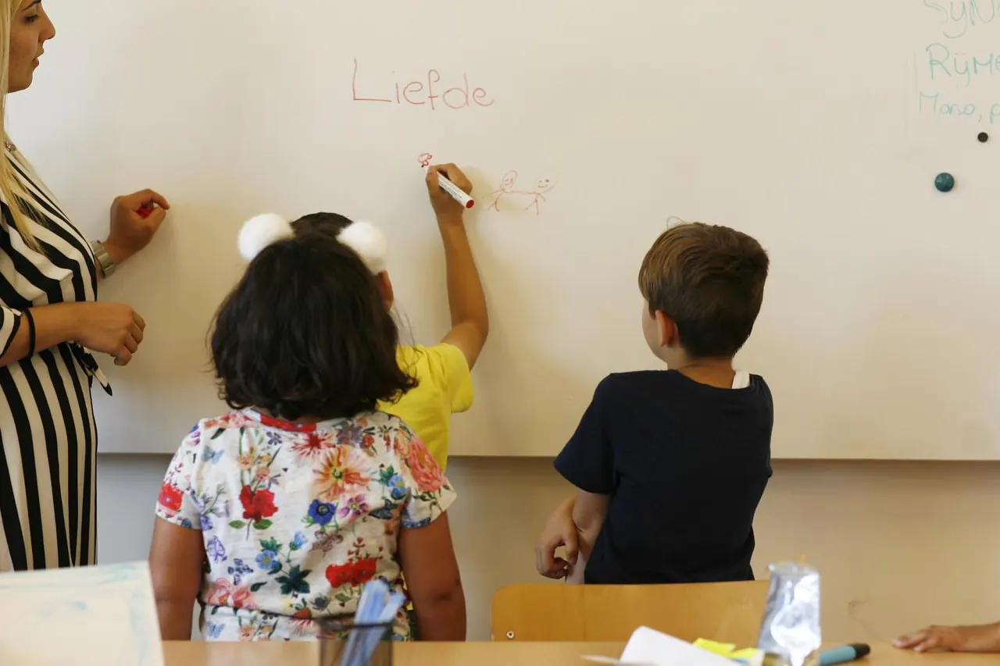
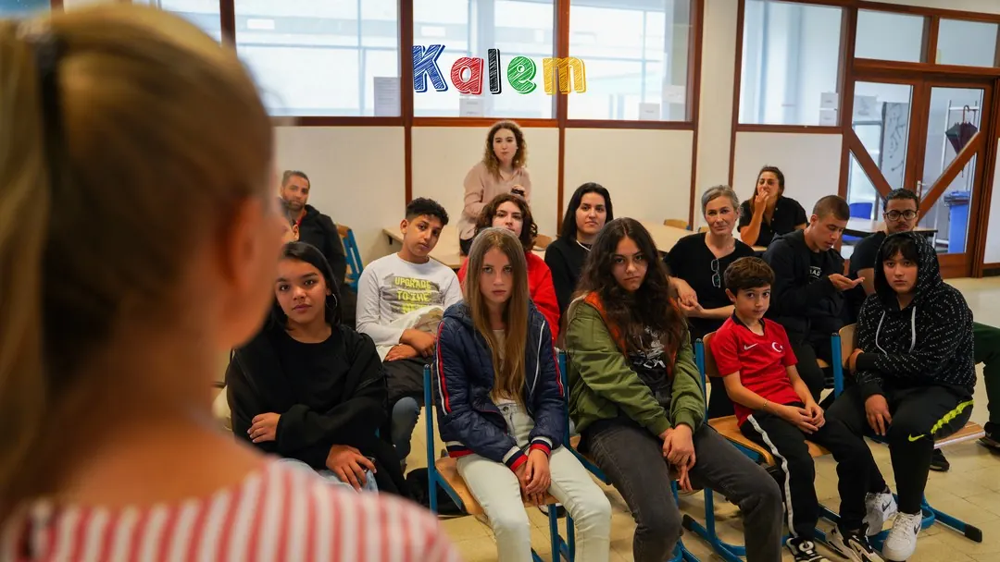

Met vertrouwen deelnemen
Een vraag stellen, een idee delen of voor een groep spreken vraagt oefening. Gesprekken en presentatieopdrachten bieden een aanleiding om dat te proberen.
Visie en aanpak
Het kind als geheel, met aandacht voor leren, talent, welzijn en de mensen eromheen.

Visie en aanpak
Kalem vzw wil kinderen en jongeren ondersteunen in hun ontwikkeling, op school en daarbuiten.
Dat krijgt vorm in educatieve en sociaal-culturele activiteiten. Schoolwerk, muziek, creatieve opdrachten en gesprekken bieden elk een andere manier om te leren. De inzet is dat deelnemers kunnen oefenen, vragen stellen en ontdekken wat hen bezighoudt.
Het doel
De volgende doelen geven richting aan de werking. Ze beschrijven wat Kalem vzw wil ondersteunen.
Een vraag stellen, een idee delen of voor een groep spreken vraagt oefening. Gesprekken en presentatieopdrachten bieden een aanleiding om dat te proberen.
Kinderen weten niet altijd vooraf wat hen ligt. Door met instrumenten, creatieve opdrachten en nieuwe onderwerpen kennis te maken, kunnen ze hun interesses onderzoeken.
Een groepsopdracht vraagt dat deelnemers luisteren, afspraken maken en ruimte laten voor een ander. Samen iets uitvoeren maakt die vaardigheden concreet.
Gastsprekers en bezoeken brengen studie, beroepen en levensverhalen dichterbij. Jongeren krijgen de kans om vragen te stellen over keuzes die ze zelf nog moeten maken.

Van doel naar activiteit
Een melodie spelen, een korte film bedenken, een presentatie geven of samen een probleem oplossen: de activiteit geeft deelnemers iets tastbaars om aan te werken. Tijdens onze kampen wisselen zulke opdrachten af met schoolse leeractiviteiten en beweging.
Naast uitleg is er ruimte om iets uit te voeren. Deelnemers kunnen een instrument vasthouden, een verhaal uitwerken of vragen aan een gastspreker stellen. Zo blijft het onderwerp niet alleen iets waarover wordt verteld.
Niet elk kind toont zijn interesses op dezelfde manier. Een programma met leren, muziek, creativiteit en groepsactiviteiten biedt verschillende aanknopingspunten. In onze zomerkampen brengen we die werkvormen samen.
Bekijk de verschillende werkvormenThuis, school en vrije tijd
Kinderen brengen ervaringen mee van thuis en school. Ouders hebben op hun beurt vragen over leren, opvoeding en de keuzes van hun kind.
Kalem vzw betrekt ouders via leergroepen en ouderbijeenkomsten. In Project Anne staat de verbinding tussen moeders en school centraal. Zo krijgt het gesprek over de ontwikkeling van een kind ook een plaats bij volwassenen.
Lees over ouders en school
Voor scholen en lokale partners
Wilt u met Kalem vzw spreken over kinderen, jongeren of ouderbetrokkenheid? Een zinvol vertrekpunt is een concrete vraag: voor welke groep, met welk doel en in welke omgeving?
De voorbeelden op deze website laten zien met welke thema’s de vereniging ervaring heeft. Voor een nieuw initiatief moeten de inhoud en praktische afspraken samen worden besproken.
Samenwerken met Kalem vzwVoor scholen, de stad en projectpartners die samen aan ontwikkeling willen werken.